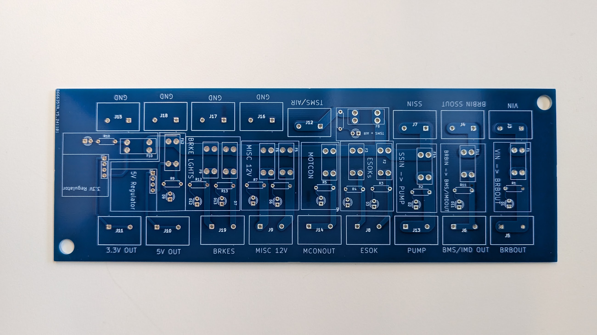
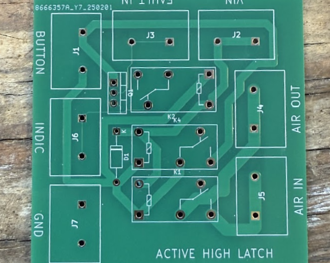

Overview
As part of Tufts Electric Racing's commitment to safety and regulatory compliance, I designed and developed critical safety-system PCBs for our high-voltage electric race car. These boards monitor, control, and protect both the vehicle and driver across competition and testing.
Fusebox PCB

The fusebox serves as a critical protection and distribution hub for the vehicle's electrical systems. It incorporates multiple fuse circuits — each with a visual indicator for a blown fuse — and is designed to handle high-current loads while staying safe under fault conditions.

Safety interlocks PCB
The safety interlocks keep the safety system energized only when no faults are present. I designed active-high and active-low latches for use with different sensor types — motor controller, BMS, and high-voltage connection interlock fault signals. The circuits always start in the disconnected state at power-up and only energize when every safety condition is met. They're fail-safe by construction: any loss of power or fault condition immediately de-energizes the system.
